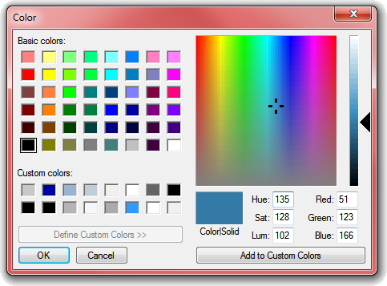
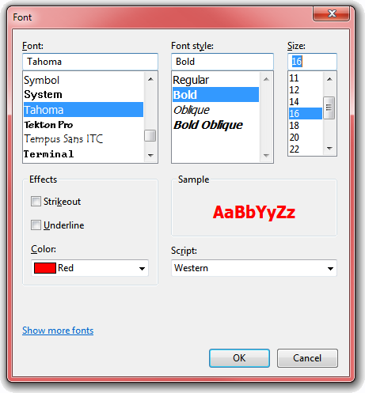

Description
The common dialogs OCX is probably the single most dispensible dependency
there is. Long ago, Bruce McKinney wrapped up most of the common dialogs as
easily callable functions. Over the years, I've taken those as starting points,
broken them free of their own various dependencies (Bruce loved typelibs!), and
augmented them a bit. As they're ready to be rolled out, I will offer them here
for your download enjoyment.
ChooseColor
Almost all programs use files, and can make use of the File-open or File-save dialogs.
And a great number of them may also have a need to select color from time to
time. You can always design your own color picker dialog, but why? Windows
provides a fairly nice one, that just about everyone is familiar with:

Setting up, and using the results of the ChooseColor common dialog only requires a few steps. Just
drop the MCommonColor.bas module into your project, then use code like this:
Private Sub cmdColor_Click()
Dim Color As Long
Dim FullOpen As Boolean
Dim PreventOpen As Boolean
With lblTextSample
' Start with existing backcolor,
' if not the standard.
If .BackColor <> vb3DFace Then
Color = .BackColor
End If
' Configure as requested.
FullOpen = (chkFullOpen.Value = vbChecked)
PreventOpen = (chkPreventOpen.Value = vbChecked)
' Let user pick new backcolor for label.
If ChooseColor(Color, , FullOpen, PreventOpen, Me.hWnd) Then
' Apply new color.
.BackColor = Color
' Update custom color display.
picColors.Refresh
End If
End With
End Sub
Start by assigning the starting color to a variable you'll pass to my
ChooseColor function. This variable will also hold the final color when the
function returns successfully. Decide whether you want to enable the optional
features, like showing the dialog fully open, or preventing it from opening at
all. The second parameter (AnyColor) is pretty useless on full-color displays,
which are ubiquitous now, but could force solids rather than half-tones when on
a 256-color display.
GetFontChoice
The one may be the simplest of all, which may
be called as simply as this:
Private Sub cmdFont_Click()
Dim Color As Long
Dim Flags As ChooseFontFlags
' Simplest possible way to call the ChooseFont API,
' by wrapping it up in a single routine and passing
' the font object we want to change.
With Label1
' Set the flags we want to use.
Flags = CF_SCREENFONTS Or CF_NOVERTFONTS Or CF_EFFECTS
' Only use scalable fonts, omit ones like MS Sans Serif?
If chkScalable.Value = vbChecked Then
Flags = Flags Or CF_SCALABLEONLY
End If
' Only the color needs special handling, since that's
' an attribute of the label and not the font.
Color = .ForeColor
If GetFontChoice(.Font, , Me.hWnd, Color, , , Flags) Then
' Success!
.ForeColor = Color
End If
End With
End Sub
Resulting in this:

The GetFontChoice function is designed such that it changes the attributes of
a passed Font object to match the user's selection in the common dialog. Hard to
get much simpler than that!
Stay tuned here, as I intend to get the File Save, File Open, Color, and
Find/Replace dialogs up shortly.
GetOpenFileName
I think the GetOpenFileName function is probably the most complicated of the
common dialogs to call, simply because there are the most possible options. It's
really not complicated, though, just a bit involved. Like anything else that has to do with the file system.
The user has multiple ways to work with this dialog. The premise is,
GetOpenFileName returns a value from 0 to N, representing the number of
files the user has chosen. Your response needs to branch based on this
value, as shown here:
 |
Private Sub cmdOpen_Click()
Dim FileName As String
Dim Filter As String
Dim Files As Long
Dim Multi As Boolean
Dim Exists As Boolean
Dim ReadOnly As Boolean
Dim Flags As OpenFileFlags
Dim TheFiles() As String
Dim nCount As Long
Dim i As Long
' Build up a filter to restrict visible files to just
' Classic VB source files or to show all files.
Filter = "VB Source Files (*.bas;*.frm;*.cls;*.ctl)|*.bas;*.frm;*.cls;*.ctl|" & _
"All Files (*.*)|*.*"
' Base toggle options on user checkboxes.
Multi = (chkMultiselect.Value = vbChecked)
Exists = (chkMustExist.Value = vbChecked)
' Avoid clutter in Recent Files list.
Flags = OFN_DONTADDTORECENT
cboFiles.Clear
nCount = GetOpenFileName(FileName, Exists, Multi, ReadOnly, , Filter, , _
CurDir, "This is the DlgTitle", , Me.hWnd, Flags)
Select Case nCount
Case 0
cboFiles.AddItem "User cancelled Open File selection dialog."
Case 1
cboFiles.AddItem FileName
Case Is > 1
Files = MultiSelectFiles(TheFiles)
For i = 0 To Files - 1
cboFiles.AddItem TheFiles(i)
Next i
End Select
lblReadOnly.Visible = ReadOnly
If cboFiles.ListCount Then cboFiles.ListIndex = 0
End Sub
There are numerous options to the GetOpenFileName call, most of them
optional. Be sure to see the VSM Online articles listed below for more
details on the implementation.
The MCommonFile.bas module also contains the beginnings of a File-Save
dialog routine. I'll be cleaning that up, and adding that here next. Stay
tuned.
Published
This sample, or the one from which it originally derived, was published (or at least
peripherally mentioned) in the following article(s):
APIs Usage
This sample uses the following API calls:
| Module |
Library |
Function |
| MCommonColor.bas |
comdlg32
user32 |
ChooseColor
GetSysColor |
| MCommonFile.bas |
comdlg32
kernel32
shlwapi
user32
|
CommDlgExtendedError
GetOpenFileName
GetSaveFileName
GetVersionEx
lstrlenA
lstrlenW
RtlMoveMemory
PathCombineW
PathFileExistsW
PathIsDirectoryW
GetParent
SendMessage
SetWindowLong |
| MCommonFont.bas |
comdlg32
kernel32 |
ChooseFont
CommDlgExtendedError
RtlMoveMemory |
Don't see what you're looking for? Here's a
complete API cross-reference.
Download

|
|
Please, enjoy and learn from this sample. Include its code within your own projects, if you wish. But, in order to insure only the most recent code is available to all, I ask that you
don't share the sample by any form of mass distribution.
Download Dialogs.zip,
66Kb, Last Updated: Tuesday, January 18, 2011
|
See Also
The following resources may also be of interest:
- FontFilter - Demonstrates how to filter hidden fonts so you can avoid offering them as valid choices.

|